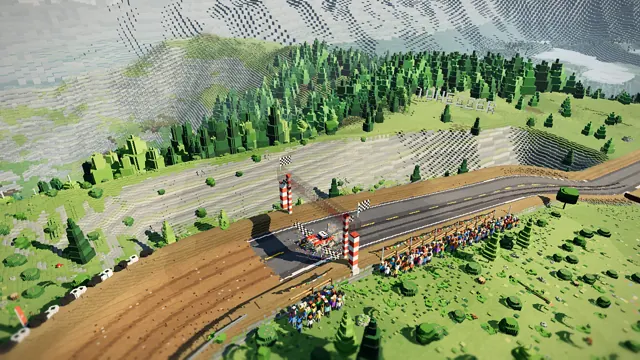
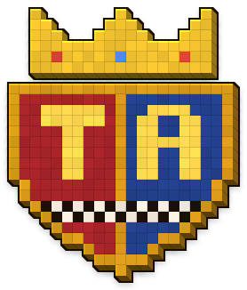
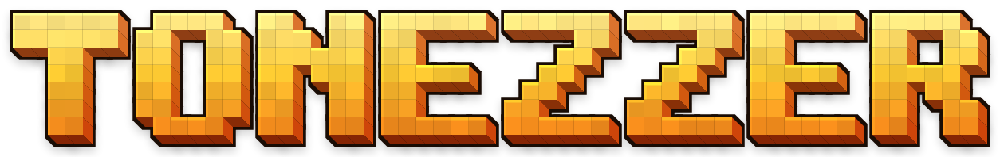
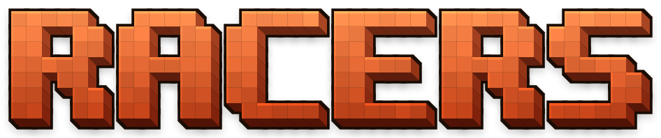
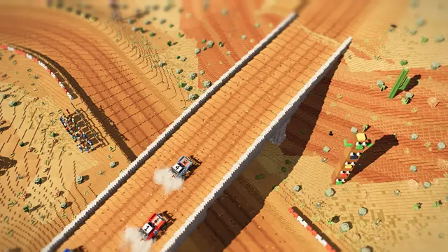
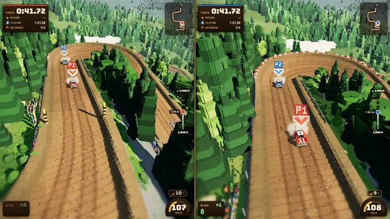
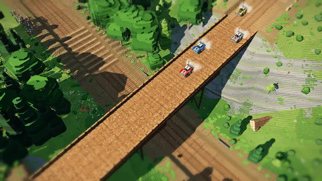
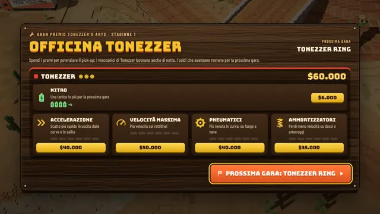
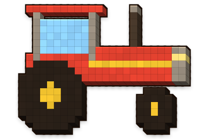
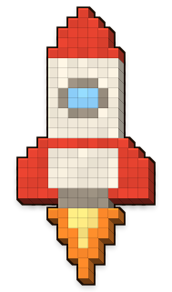

Modalità
Cronoscalata
Dalla valle alla vetta contro il cronometro: sei salite di montagna, tempi intermedi, il fantasma del tuo record da battere e medaglie da Bronzo fino al Platino. Sbagli una curva? R e si riparte.

Tonezzer’s Arts presenta

Fango, salti e nitro in voxel art HD. Dieci circuiti di montagna, cronoscalate contro il tuo fantasma e sfide a due sullo stesso schermo.
Nessuna installazione, nessuna registrazione. Consiglio della casa: F11 per lo schermo intero, e il volume alto.telefono in orizzontale, e il volume alto.
Colle del Falco · arrivo in vetta
Il gioco
Quattro pick-up, una pista di fango e nessuna pietà. Tonezzer Racers è l’erede spirituale delle corse off-road da sala giochi di una volta, ricostruito voxel per voxel in alta definizione. Si gioca subito, nel browser, gratis.
* Secondo uno studio indipendente condotto da Giacomo Tonezzer.

Modalità
Dalla valle alla vetta contro il cronometro: sei salite di montagna, tempi intermedi, il fantasma del tuo record da battere e medaglie da Bronzo fino al Platino. Sbagli una curva? R e si riparte.

Deserti, canyon al tramonto, paludi, boschi alpini, neve e stadi illuminati a giorno. Salti, guadi, ponti di legno e tornanti a strapiombo.

Schermo diviso sullo stesso computer: tastiera condivisa o due gamepad. Le amicizie più solide finiscono qui, al primo tornante.

Boschi rigogliosi di abeti e larici, laghi neri, fango che schizza, polvere e luci al neon. Ogni singolo voxel è stato approvato personalmente da Tonezzer.
Gare in fila contro il Barone, premi in denaro e un gettone in meno a chi arriva ultimo. Chi incassa di più alza la Coppa Tonezzer.

Tra una gara e l’altra spendi i premi in nitro, accelerazione, velocità, gomme e ammortizzatori. I meccanici di Tonezzer lavorano anche di notte.
Colonna sonora
La canzone ufficiale del gioco, scritta da Giacomo Tonezzer e creata con Suno. Si consiglia l’ascolto a finestrini abbassati.
Galleria
Immagini catturate dal gioco vero, senza ritocchi. Il fango è tutto originale.
Il catalogo
Un catalogo piccolo ma perfetto: per ora contiene esclusivamente capolavori.
Disponibile · Gratis
Il gioco di bandiera: pick-up, fango, nitro, dieci circuiti e sei cronoscalate. La Coppa Tonezzer non si vince da sola.

Top secretProssimamente*
Il primo simulatore di aratura a 140 km/h. Stessa fisica del fango, ma con le zolle. La Federazione Agraria ha già chiesto di vietarlo.

Top secretProssimamente*
Il primo pick-up sulla Luna. Salti da quaranta secondi, crateri come paraboliche e nessun posto dove nascondersi dal Barone.
* “Prossimamente” è un’unità di misura temporale brevettata da Tonezzer’s Arts. Corrisponde a: quando Giacomo dice che è pronto.
Lo studio
Tonezzer’s Arts è la celeberrima casa di produzione di videogiochi fondata da Giacomo Tonezzer. Gli storici non concordano sulla data di fondazione; concordano però sul fatto che esista, semplicemente, da sempre.
Si narra che il giovane Giacomo abbia imparato a sterzare prima di camminare, a disegnare circuiti prima di scrivere e a vincere la Coppa Tonezzer prima ancora di inventarla. Il suo primo pick-up era un carrello della spesa. Ha vinto lo stesso.
Da allora la missione dello studio non è mai cambiata: fare i migliori giochi del mondo, uno alla volta, senza fretta e senza la minima modestia. Ogni progetto nasce da un’idea di Giacomo, cresce sotto la sua direzione artistica, viene collaudato personalmente (con il record su ogni pista, ovviamente) e arriva a voi gratis, perché la grandezza va condivisa.
«Un gioco è finito quando il fango schizza nel modo giusto.»
Riconoscimenti
Ideazione, direzione e produzione
Ideazione e direzione, direzione artistica, produzione esecutiva, collaudo piloti, collaudatore capo dei salti e detentore del record su ogni pista.
Sviluppo e programmazione
Sviluppo, programmazione, fisica dei pick-up, motori e cori sintetizzati e ogni singolo voxel: Claude, l’assistente AI di Anthropic, sotto la direzione di Giacomo Tonezzer.
“Toh-NAY-tser Racers”
Canzone di Giacomo Tonezzer, creata con Suno. Approvazione del rombo dei motori: Giacomo Tonezzer.
Strumenti e ispirazione
three.js (motore 3D, licenza MIT), i caratteri Bungee e Barlow Condensed, il Fan Club Ufficiale Tonezzer, le sale giochi di una volta e il fango del sabato sera.
Come si gioca
Da solo guidi anche con WASD. P pausa, C telecamera, M audio.
Con due gamepad, uno per giocatore.
Su telefono e tablet si gioca in orizzontale.
Il Barone ti aspetta sulla linea di partenza. La Coppa Tonezzer pure.